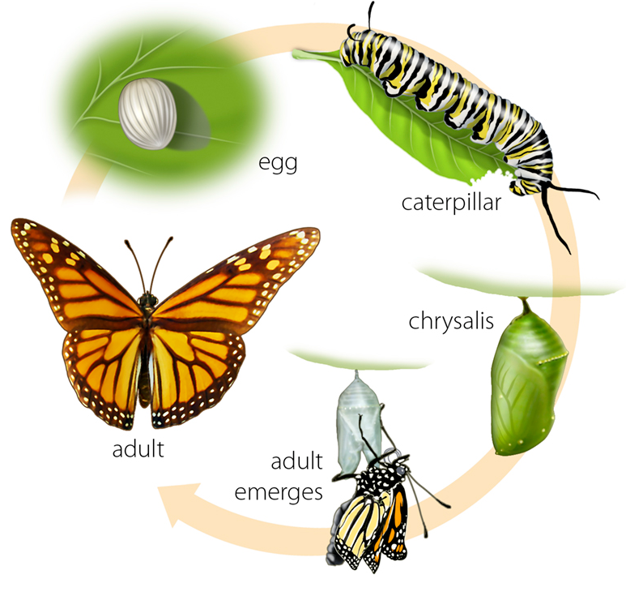
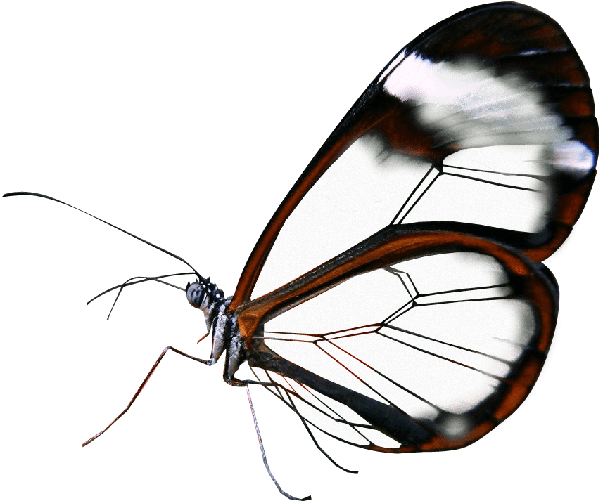
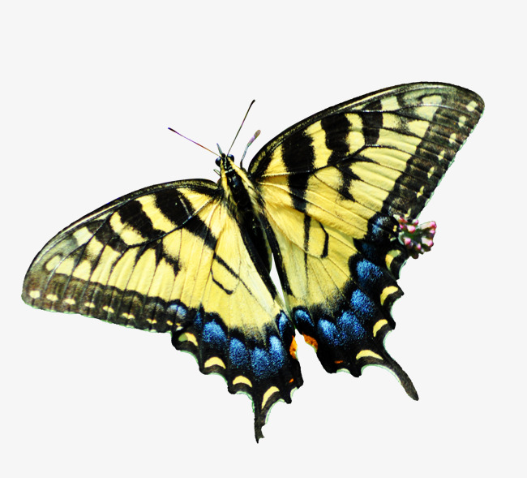

Klasifikasi

| Superkerajaan |
: |
Eukaryota |
| Kerajaan |
: |
Animalia |
| Kelas |
: |
Insecta |
| Filum |
: |
Arthropoda |
| Ordo |
: |
Lepidoptera |
| Upaordo |
: |
Rhopalocera |
Kupu - kupu adalah serangga yang tergolong ke dalam ordo Lepidoptera. Sederhananya, perbedaan kupu - kupu dibedakan dari ngengat berdasarkan waktu aktifitasnya pada malam hari dan kupu - kupu aktifnya pada siang hari.

Kupu - kupu biasanya meletakkan telur mereka di daut, biasanya bentuknya pun bulat kecil - kecil berwarna putih. Setiap kupu - kupu memiliki daun kesukaan mereka, mereka akan bertelur di daun tersebut karena jika telurnya menetas nanti bisa langsung mendapatkan makanan. Biasanya mereka juga meletakkan telurnya di bawah ataupun ujung daun, itu karena supaya dapat terlindungi dari gangguan luar. Telur tersebut akan bertahan antara 3 - 5 hari sebelum menetas.
Larva merupakan fase dimana kupu - kupu masih dalam bentuk ulat. Sebagian besar orang akan merasa tidak nyaman dengan ulat, terutama bulu ulat tersebut yang bisa saja menyebabkan kulit kita gatal - gatal. Pertumbuhan ular bisa dikatakan cepat, mereka berganti kulit. Ulat berganti kulit sebanyak 4 - 6 kali.
Setelah menjadi ulat, mereka akan mencari tempat dan daun yang cocok untuk membungkuskan diri mereka. Biasanya kepompong berwarna hijau ataupun coklat, hal tersebut karena untuk menyamarkan diri dari lingkungan sekitar. Untuk lama pembentukannya sendiri tergantung dari jenis spesiesnya sendiri, tetapi rata - rata antara 7 - 20 hari.
Setelah proses kepompong, akhirnya ulat tersbeut berubah menjadi kupu - kupu, mereka memiliki sayap dan bentuk tubuh yang indah.
Fakta
Sayap Kupu - Kupu Transparan
Loh kok bisa? Kita semua tahu kan yang namanya kupu - kupu mempunyai sayap yang berwarna - warni. Ternyata, sayap kupu - kupu sebenarnya dibentuk oleh lapisan kitin, protein yang sama yang membentuk exoskeleton serangga.
Kupu - Kupu Minum dari Genangan Air Lumpur
Kupu - kupu tidak bisa hidup pada gula, mineral saja. Kupu - kupu terkadang akan minum dari genangan air lumpur yang kaya akan mineral dan garam. Perilaku ini disebut pelumpuran.
Kupu - Kupu Tidak Bisa Terbang Jika Mereka Dingin
Kupu - kupu memerlukan suhu tubuh ideal sekitar 85 derajat F untuk terbang. Karena mereka hewan berdarah dingin, mereka tidak bisa mengatur suhu tubuh mereka sendiri.
Galeri

